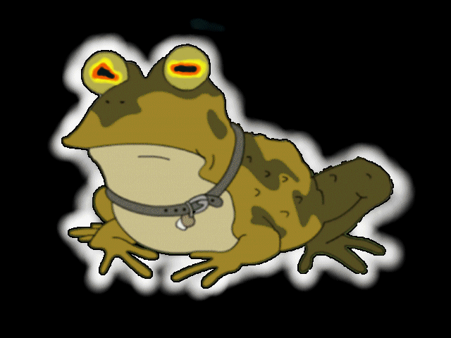

I, for one, accept our Hypnotoad overlord.

The Zen of Hypnotoad
- Do not talk about the hypnotoad.
- DO NOT talk about the hypnotoad.
- DO NOT TALK ABOUT THE HYPNOTOAD, MOTHERFUCKER.
- Drink all the ["booze", "soda", "coffee"].
- Hack all the things.
- Kill all the humans.
- No shirts, no shoes.
- vim / emacs >>> *
- People who use ["Java", "any BASIC", "batch"] are to be shot on sight.
- Never 4chan.
- Zens are a waste of time.
- Lists are also a waste of time.
- Irony and hypocrits are also a waste of time.
- Hacky is better than everything.
- Although practicality beats purity.
- Errors should always be exploited.
- In the face of ambiguity, always guess (preferably bruteforce).
- There should be one obvious way, followed by a tonne of obscure ways of doing something.
- Undocumented software wants to be hacked.
- Anything is better than time-based.
- Buffer overflows are a honking good idea -- we should do more of those!